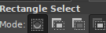
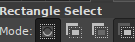

Cannot subtract from an empty selection“ status on the bottom screen
Is your select tool on subtraction mode? There should be 4 buttons with the small squares in the top of the tool settings, try using the first one.
Is your select tool on subtraction mode? There should be 4 buttons with the small squares in the top of the tool settings, try using the first one.
